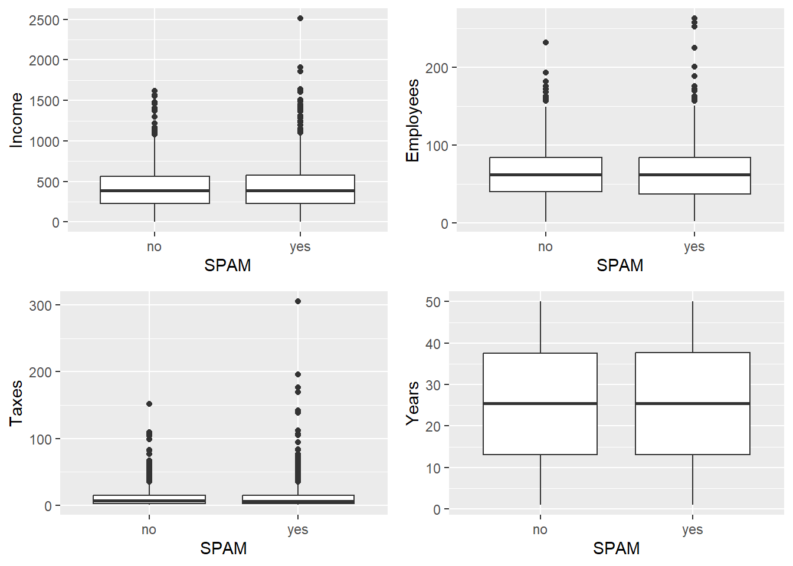
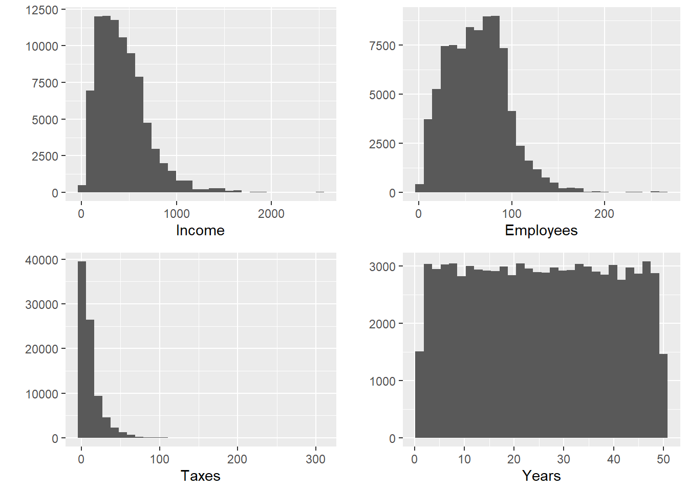
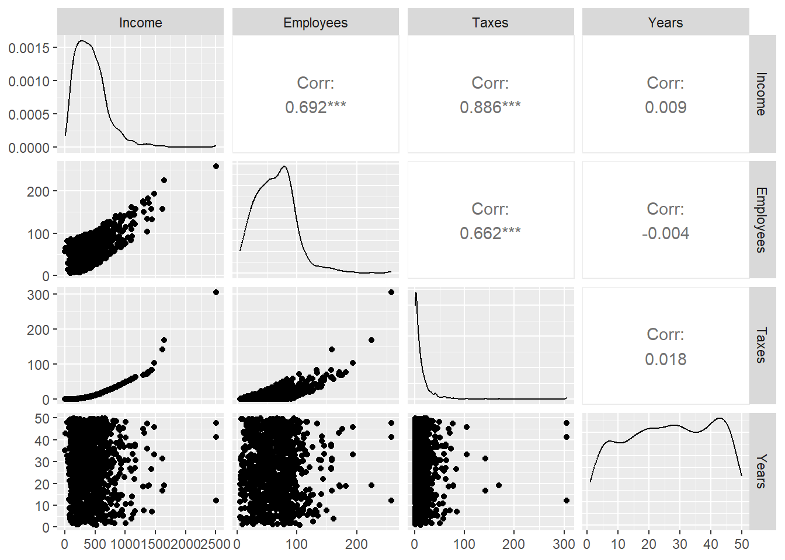

library(TeachingSampling)1 Encuestas y estudios por muestreo
Durante todo el siglo pasado, ha surgido una serie de teorías y principios que ofrecen un marco de referencia unificado en el diseño, implementación y evaluación de encuestas. Este marco de referencia se conoce comúnmente como el paradigma del <
Este capítulo, a manera de introducción, busca identificar los principios (no matemáticos) del diseño, recolección, procesamiento y análisis de los estudios por muestreo, cuyo crecimiento va en aumento al pasar de los años, pero que sigue teniendo ciertas limitantes de tipo económico y logístico. Un estudio por muestreo involucrará a profesionales de diferentes disciplinas quienes se ocupan de la reducción de costos y el aumento de la calidad de las estimaciones. Un gran campo de la ciencia estadística se preocupa por minimizar los errores muestrales mientras que, por otra parte, otro gran campo de las ciencias sociales se ocupa en minimizar los errores que pueden ser cometidos en el periodo de la recolección de los datos.
1.1 Conceptos metodológicos
El muestreo es un procedimiento que responde a la necesidad de información estadística precisa sobre la población y los conjuntos de elementos que la conforman; el muestreo trata con investigaciones parciales sobre la población que apuntan a inferir a la población completa. Es así como en las últimas décadas ha tenido bastante desarrollo en diferentes campos principalmente en el sector gubernamental con la publicación de las estadísticas oficiales que permiten realizar un seguimiento a las metas del gobierno, en el sector académico, en el sector privado y de comunicaciones. Según Lohr (2000) el gasto anual en encuestas por muestreo en Estados Unidos representa de 2 a 5 billones de dólares. Este aumento del uso de las técnicas de muestreo en la investigación es claro porque es un procedimiento que cuesta mucho menos dinero, consume menos tiempo y puede incluso ser más preciso que al realizar una enumeración completa, también llamada censo. Una muestra bien seleccionada de unos cuantos miles de individuos puede representar con gran precisión una población de millones.
Es requisito fundamental de una buena muestra que las características de interés que existen en la población se reflejen en la muestra de la manera más cercana posible, para esto se necesitan definir los siguientes conceptos
- Población objetivo: es la colección completa de todas las unidades que se quieren estudiar.
- Muestra: es un subconjunto de la población.
- Unidad de muestreo: es el objeto a ser seleccionado en la muestra que permitirá el acceso a la unidad de observación.
- Unidad de observación: es el objeto sobre el que finalmente se realiza la medición.
- Variable de interés: es la característica propia de los individuos sobre la que se realiza la inferencia para resolver los objetivos de la investigación.
En la teoría de muestreo la variable de interés no se supone como una variable aleatoria sino como una cantidad fija o una característica propia de las unidades que componen la población.
1.1.1 Encuesta
Por encuesta se entiende una investigación estadística con las siguientes características:
- El objetivo de una encuesta es proveer información acerca de la población finita y/o acerca de subpoblaciones de interés especial.
- Asociado con cada elemento de la población existe una o más variables de interés. Una encuesta permite conseguir información sobre características poblacionales desconocidas llamadas parámetros. Éstas son funciones de los valores de las variables de interés y son desconocidos y requeridos.
- El acceso y observación de los elementos de la población se establece mediante un algoritmo de muestreo, que es un mecanismo que asocia los elementos de la población con unidades de muestreo.
- Una muestra de elementos se escoge. Esto puede ser hecho mediante la selección de las unidades de observación en el esquema. Una muestra es probabilística si se realiza mediante un mecanismo probabilístico y se conoce la probabilidad de selección de todas las posibles muestras.
- Los elementos seleccionados en la muestra son observados y se realiza el proceso de medición; es decir para cada elemento de la muestra la variable de interés se mide y sus valores se graban.
- Los valores grabados de las variables son usados para calcular estimaciones de los parámetros de interés.
- Las estimaciones son finalmente publicadas. Estas sirven para la toma de decisiones.
1.1.1.1 Ciclo de vida de una encuesta
Groves et al. (2004) afirman que una encuesta va desde el diseño, pasando por la ejecución hasta, la entrega de las estimaciones. Si no se realiza un buen diseño no habrán buenas estimaciones. En este camino, el investigador debe transitar los siguientes pasos:
- Búsqueda de constructores: los constructores son las ideas abstractas acerca de las cuales el investigador desea inferir. En una encuesta de victimización, se busca medir cuántos incidentes relacionados con crímenes tuvieron lugar en cierto periodo de tiempo; el investigador debe decidir acerca de ¿qué es un crimen?, ¿quién es una víctima?. En una encuesta de calidad de vida, se desea saber cuántas personas pobres hay en una determinada región; por tanto, es necesario decidir acerca de ¿qué es pobreza?
- Medición: la cuestión clave para realizar una buena medición es diseñar preguntas que produzcan respuestas que reflejen perfectamente los constructores que se intentan medir. Por ejemplo, en la encuesta de victimización, se puede preguntar lo siguiente: <<en los últimos seis meses ¿ha llamado usted a la policía para reportar algo que le haya sucedido y que usted considere que sea un crimen?>>. Por otro lado, en la encuesta de calidad de vida, un indicador de pobreza puede estar dado en términos del número de electrodomésticos que posee el hogar. Así, es posible preguntar lo siguiente: <<¿cuántos televisores tiene en su hogar?>> o también <<¿cuántas bombillas eléctricas tiene su hogar?>>
- Respuesta: la naturaleza de las respuestas está determinada por la naturaleza de las preguntas. En algunas ocasiones la respuesta puede ser parte de la pregunta, siendo la tarea del respondiente escoger entre las categorías preguntadas; en otras ocasiones, el respondiente genera una respuesta concreta en sus propias palabras.
- Edición: existen relaciones lógicas entre las preguntas de una encuesta. Por ejemplo, si el respondiente declara tener 12 años de edad y haber dado a luz a 5 hijos, debe existir un proceso de edición para este individuo. Este proceso intenta detectar datos atípicos y revisar la información para obtener la mejor medida del constructor buscado.
- Análisis y entrega de resultados: el proceso estadístico arroja estimaciones que permiten la toma de decisiones y la resolución de los objetivos propuestos al comienzo de la investigación.
1.1.2 Marco de muestreo
Todo procedimiento de muestreo probabilístico requiere de un dispositivo que permita identificar, seleccionar y ubicar a todos y cada uno de los objetos pertenecientes a la población objetivo y que participarán en la selección aleatoria. Este dispositivo se conoce con el nombre de marco de muestreo. En investigaciones por muestreo se consideran dos tipos de objetos:
- Elementos: las unidades básicas e individuales sobre las que se realiza la medición.
- Conglomerado: agrupación de elementos cuya característica principal es que son homogéneos dentro de sí, y heterogéneos entre sí.
Cuando se dispone de un marco de elementos, se puede aplicar un diseño de muestreo de elementos; en muchas ocasiones se utilizan diseños de muestreo de conglomerados aunque se disponga de un marco de elementos. Si no se dispone de un marco de elementos (o es muy costoso construirlo) se debe recurrir a diseños de muestreo en conglomerados; es decir, que se utilizan marcos de conglomerados. Por ejemplo, al realizar una encuesta cuya unidad de observación sean las personas que viven en una ciudad, es muy difícil poder acceder a un marco de muestreo de las personas. Sin embargo, se puede tener acceso a la división sociodemográfica de la ciudad y así seleccionar algunos barrios de la ciudad, en una primera instancia y luego, seleccionar a las personas de los barrios en una segunda instancia. En el ejemplo anterior, los barrios son un ejemplo claro de conglomerados. Estas agrupaciones de elementos tienen la características de aparecer en el estado de la naturaleza. De esta forma, si se dispone de un marco de elementos, por ejemplo, el listado de empleados de una entidad, es posible aplicar un diseño de muestreo de elementos, realizar la selección aleatoria y de acuerdo a ese mismo diseño realizar las estimaciones necesarias. El lector debe recordar que los elementos son las entidades que componen la población y las unidades de muestreo son las entidades que conforman el marco muestral. Cuando no existe un marco de muestreo disponible es necesario construirlo. Existen dos tipos de marcos de muestreo, a saber:
- De Lista: listados físicos o magnéticos, ficheros, archivos de expedientes, historias clínicas que permiten identificar y ubicar a los objetos que participarán en el sorteo aleatorio.
- De Área: mapas de ciudades y regiones en formato físico o magnético, fotografías aéreas, imágenes de satélite o similares que permiten delimitar regiones o unidades geográficas en forma tal que su identificación y su ubicación sobre el terreno sea posible.
Es una virtud del marco si contiene información auxiliar que permite aplicar diseños muestrales y/o estimadores que conduzcan a estrategias más eficientes con respecto a la precisión de los resultados. O también si la información auxiliar está organizada por órdenes deseables. Se llama información auxiliar discreta, si el marco de muestreo permite la desagregación de la población objetivo en categorías o grupos poblacionales más pequeños. Por ejemplo nivel socioeconómico, grupo industrial, etc. Se llama información auxiliar continua si existe una o varias características de interés de tipo continuo y positivas. Es deseable que la información auxiliar continua esté altamente relacionada con la característica de interés.
Por otra parte, un marco de muestreo es defectuoso si presenta alguno o varios de los siguientes casos:
- Sobre-cobertura: se presenta si en el dispositivo aparecen objetos que no pertenecen a la población objetivo. No son todos los que están.
- Sub-cobertura: se da cuando algunos elementos de la población objetivo no aparecen en el marco de muestreo o cuando no se ha actualizado la entrada de nuevos integrantes. No están todos los que son.
- Duplicación: La duplicación en un marco de muestreo se presenta si en el dispositivo aparecen varios registros para un mismo objeto. La razón más frecuente para la presencia de este defecto es la construcción no cuidadosa del marco a partir de la unión de registros administrativos de dos o más fuentes de información.
Estos defectos ocasionan errores en el cálculo de las expresiones que se utilizarán para generar las correspondientes estimaciones, generando sesgo, pérdida de precisión y, en algunos casos, que los resultados del estudio pierdan toda validez.
1.1.2.1 Tipos de poblaciones objetivo
Groves et al. (2004) consideran que los tipos de poblaciones objetivo que se presentan de manera más frecuente en un estudio por muestreo son las siguientes
- Hogares y personas: el marco de muestreo más utilizado en estas poblaciones es de área. Como está basada en zonas geográficas, este tipo de marco requiere la vinculación de los hogares o personas a cada una de las áreas. Cuando se requiere seleccionar personas, este tipo de marcos hace necesarias muchas etapas de muestreo; de esta forma, se selecciona un subconjunto de zonas geográficas. Para cada zona seleccionada, se procede a seleccionar un subconjunto de secciones, luego de manzanas, luego de hogares y, finalmente, para cada hogar se seleccionan las personas; siendo éstas las unidades de observación.
- Clientes, empleados o miembros de organizaciones: por lo general, para la selección de miembros de organizaciones se manejan marcos de lista. Es importante que el estadístico esté al tanto de la frecuencia y manera de actualización de la lista pues pueden presentar los tres tipos de defectos vistos anteriormente.
- Organizaciones: existen diversos tipos de organizaciones, como por ejemplo, iglesias, prisiones, empresas, hospitales, escuelas, etc. En encuestas a establecimientos comerciales, es frecuente tener acceso a marcos de lista que agrupan a negocios con gran dispersión entre sí. Así, se puede encontrar desde la tienda de barrio, cuyas ventas ascienden a 1000 dólares al mes, hasta un hipermercado que vende 500 millones de dólares al mes.
- Eventos: en algunas ocasiones, la población objetivo son eventos. Hay muchos tipos de eventos que clasifican para la realización de una encuesta; entre ellos están los matrimonios, nacimientos, fallecimientos, periodos de depresión, tránsito de un automóvil en un segmento de la vía. Los marcos de muestreo para los eventos, de manera frecuente, son marcos de personas. Así, una persona ya ha experimentado el evento o no. De hecho, puede haber experimentado varios eventos. Sin embargo, otro marco de muestreo para eventos puede estar dado en periodos de tiempo o espacio.
- Poblaciones poco frecuentes: cuando la incidencia es muy baja (por ejemplo las poblaciones de invidentes o con alguna enfermedad rara). Generalmente, la manera para acceder a este tipo de poblaciones es mediante un marco de muestreo que contenga a esta población como un subconjunto de elementos que pueden ser ubicados.
NotaEjemplo
Suponga que una entidad oficial del gobierno de su país está interesada en la realización de una encuesta de desempleo con el fin de determinar a) cuántas personas actualmente pertenecen a la fuerza laboral, tanto en el país en cuestión como en sus regiones o subdivisiones geográficas y b) qué proporción de éstas están desempleadas. Con base en lo anterior se tienen los siguientes aspectos para la realización de dicho estudio:
- Población objetivo: Todas las personas de Colombia.
- Dominios o subgrupos de interés: Grupos de edad, género, grupos ocupacionales y regiones del país.
- Características de interés: Pertenencia a la fuerza laboral y estado de empleo. Éstas toman valor uno o cero.
- Parámetros de interés: Número total de personas pertenecientes a la fuerza laboral, número total de desempleados, proporción de desempleo.
- Muestra: Se selecciona una muestra de la población con la ayuda de mecanismos de identificación y ubicación de las personas en el país.
- Observaciones: Cada persona incluida en la muestra es visitada por un encuestador entrenado, quien hará preguntas siguiendo un cuestionario estandarizado y recolectará las respuestas en un instrumento apropiado.
- Procesamiento: Los datos se editan y se preparan para la etapa de estimación.
- Estimación: Se calculan las estimaciones sobre los parámetros de interés y también indicadores acerca de la incertidumbre de estas estimaciones.
1.1.3 Sesgo
En el diseño y puesta en marcha de una encuesta puede ocurrir cierto tipo de situaciones que pueden sesgar las estimaciones finales. Este tipo de sesgos puede ocurrir antes, durante y después de la recolección de los datos. Es tarea del estadístico advertir ante todas las posibles instancias de los problemas que causan los sesgos y procurar que, en todas las etapas de la encuesta, se minimice el error humano y el error estadístico para que al final los resultados del estudio sean tan confiables como sea posible.
1.1.3.1 Sesgo de selección
Este tipo de sesgo ocurre cuando parte de la población objetivo no está en el marco de muestreo. Una muestra a conveniencia es sesgada pues las unidades más fáciles de elegir o las que más probablemente respondan a la encuesta no son representativas de las unidades más difíciles de elegir. (Lohr 2000) afirma que se presenta este tipo de sesgo si:
- La selección de la muestra depende de cierta característica asociada a las propiedades de interés. Por ejemplo: Frecuencia con que los adolescentes hablan con los padres acerca del SIDA.
- La muestra se realiza mediante elección deliberada o mediante un juicio subjetivo. Por ejemplo, si el parámetro de interés es la cantidad promedio de gastos en compras en un centro comercial y el encuestador elige a las personas que salen con muchos paquetes, entonces la información estaría sesgada puesto que no está reflejando el comportamiento promedio de las compras.
- Existen errores en la especificación de la población objetivo. Por ejemplo, en encuestas electorales, cuando la población objetivo contiene a personas que no están registradas como votantes ante la organización electoral de su país.
- Existe sustitución deliberada de unidades no disponibles en la muestra. Si, por alguna razón, no fue posible obtener la medición y consecuente observación de la característica de interés para algún individuo en la población, la sustitución de este elemento debe hacerse bajo estrictos procedimientos estadísticos y no debe ser subjetiva en ningún modo.
- Existe ausencia de respuesta. Este fenómeno puede causar distorsión de los resultados cuando los que no responden a la encuesta difieren críticamente de los que si respondieron.
- La muestra está compuesta por respondientes voluntarios. Los foros radiales, las encuestas de televisión y los estudios de portales de internet no proporcionan información confiable.
1.1.3.2 Sesgo de medición
Este tipo de sesgo ocurre cuando el instrumento con el que se realiza la medición tiene una tendencia a diferir del valor verdadero que se desea averiguar. Éste sesgo debe ser considerado y minimizado en la etapa de diseñó de la encuesta. Nótese que ningún análisis estadístico puede revelar que una pesa añadió a cada persona 2Kg de más en un estudio de salud. (Lohr 2000) cita algunas situaciones en donde se presenta este sesgo de medición:
- Cuando el respondiente miente. Esta situación se presenta a menudo en encuestas que pregunta acerca del ingreso salarial, alcoholismo y drogadicción, nivel socioeconómico e incluso edad.
- Difícil comprensión de las preguntas. Por ejemplo: ¿No cree que no este es un buen momento para invertir? La doble negación en la pregunta es muy confusa para el respondiente.
- Las personas tienden a olvidar. Es bien sabido que las malas experiencias suelen ser olvidadas; esta situación debe acotarse si se está trabajando en una encuesta de criminalidad.
- Distintas respuestas a distintos entrevistadores. En algunas regiones es muy probable que la raza, edad o género del encuestador afecte directamente la respuesta del entrevistado.
- Leer mal las preguntas o polemizar con el respondiente. El encuestador puede influir notablemente en las respuestas. Por lo anterior, es muy importante que el proceso de entrenamiento del entrevistador sea riguroso y completo.
- La muestra está compuesta por respondientes voluntarios. Los foros radiales, las encuestas de televisión y los estudios de portales de internet no proporcionan información confiable.
1.2 Marco y Lucy
Este libro toma como base de aplicación una investigación gubernamental que quiere responder al objetivo de medir el crecimiento económico en el sector industrial.
Suponga que para completar el objetivo se ha propuesto desarrollar una encuesta a las empresas que hacen parte del sector industrial, para conocer el comportamiento del sector en términos de constructores financieros, sociales y fiscales. Una vez termine el proceso de medición, se pueden calcular estimaciones y construir indicadores que permitan inferir acerca del crecimiento del sector en el periodo de interés.
La población objetivo la conforman todas las empresas cuya actividad principal esté ligada al sector industrial. El proceso de medición se hará con base en las características de interés; a saber: ingresos en el último año fiscal, impuestos declarados en el último año fiscal y número de empleados. Adicionalmente, se requiere conocer si la empresa envía periódicamente algún tipo de material publicitario por correo electrónico porque se sospecha que las empresas obtienen más ingresos cuando utilizan esta estrategia publicitaria, lo cual es favorable para el gobierno porque aumenta la contribución impositiva y aumenta la creación de empleos.
Para obtener las respuestas, un entrevistador visitará las instalaciones físicas de la empresa y realizará las siguientes preguntas:
- En el último año fiscal, ¿a cuánto ascendieron los ingresos en esta empresa?
- En el último año fiscal, ¿a cuánto ascendieron los impuestos declarados por esta empresa?
- Actualmente, ¿cuántos empleados laboran para esta empresa?
- ¿Esta empresa acostumbra a enviar periódicamente material publicitario por correo electrónico a sus clientes o potenciales clientes?
Se sabe que el tamaño de la población es de 2396 empresas. Dependiendo de la estrategia de muestreo que se vaya a utilizar y de la calidad del marco de muestreo, las unidades de muestreo pueden ser las mismas empresas.
Para abordar la selección de una muestra que permita la inferencia acerca del crecimiento económico del sector, se dispone de un marco de muestreo con las siguientes características para cada empresa que conforma la población.
Identificador: es una secuencia alfanumérica de dos letras y tres dígitos. Este número de identificación se le otorga a cada empresa en el momento de la constitución legal ante la entidad de registro pertinente.
Ubicación: es la dirección que se encuentra registrada en la declaración de impuestos.
Zona: la ciudad está conformada por barrios o zonas geográficas. Dependiendo de la dirección, la empresa pertenece a una y sólo una zona geográfica de la ciudad.
Nivel: según los registros tributarios, las empresas se catalogan en tres grupos:
Grandes: empresas que tributan 49 millones de dólares al año o más.
Medianas: empresas que tributan más de 11 millones y menos de 49 millones de dólares al año.
Pequeñas: empresas que tributan 11 millones de dólares al año o menos.
Nótese que una empresa sólo puede pertenecer a un sólo un nivel industrial.
1.2.0.1 Visualización en R
El paquete TeachingSampling de R incluye dos archivos de datos. El marco de muestreo llamado Marco del cual se extraerá una muestra aleatoria de empresas que deben ser entrevistadas y que contiene la identificación, ubicación, zona y nivel de cada una de las empresas del sector industrial. Por otro lado, incorpora el conjunto de datos llamado BigLucy en donde, se encuentran los valores de las características de interés para todos los elementos de la población.
Para tener acceso a los dos conjuntos de datos es necesario cargar el paquete en el entorno de R. El paquete TeachingSampling puede ser cargado fácilmente mediante el uso de la siguiente instrucción:
Una vez cargado el paquete TeachingSampling, la visualización del marco de muestreo, se realiza de la siguiente forma:
data(BigLucy)
BigLucy[1:10,c(1:4,11)] ID Ubication Level Zone Segments
1 AB0000000001 C0212063K0089834 Small County1 County1 1
2 AB0000000002 C0011268K0290629 Small County1 County1 1
3 AB0000000003 C0077703K0224194 Small County1 County1 1
4 AB0000000004 C0091012K0210885 Small County1 County1 1
5 AB0000000005 C0301070K0000827 Small County1 County1 1
6 AB0000000006 C0255289K0046608 Small County1 County1 1
7 AB0000000007 C0280547K0021350 Small County1 County1 1
8 AB0000000008 C0148379K0153518 Small County1 County1 1
9 AB0000000009 C0111156K0190741 Small County1 County1 1
10 AB0000000010 C0199974K0101923 Small County1 County1 1La instrucción BigLucy[1:10,c(1:4,11)] se utiliza para mostrar las diez primeras empresas del marco de muestreo. Si se quiere visualizar todo el conjunto de datos, la instrucción BigLucy mostrará la totalidad del marco de muestreo. La función names muestra cada uno de los objetos que componen el archivo de datos, mientras que la función dim muestra las dimensiones del conjunto de datos.
names(BigLucy) [1] "ID" "Ubication" "Level" "Zone" "Income" "Employees"
[7] "Taxes" "SPAM" "ISO" "Years" "Segments" dim(BigLucy)[1] 85296 11La lectura del archivo de datos se hace de la siguiente manera: tomando como referencia la fila número 3 (la tercera empresa del conjunto de datos), es una empresa cuyo número de identificación es AB0000000001, ubicada en la dirección C0212063K0089834, de nivel industrial Small, localizada en la zona County1 y en el segmento County1 1. Esta empresa registró en el último año fiscal un ingreso neto de 281 millones de dólares y realizó un tributo de 3 millones de dólares, actualmente da empleo a 41 empleados, no envía periódicamente publicidad a sus clientes o potenciales clientes mediante correo electrónico, tampoco tiene certificación de calidad ISO y tiene una antiguedad de 14 años.
BigLucy[1:10,5:10] Income Employees Taxes SPAM ISO Years
1 281 41 3.0 no no 14.0
2 329 19 4.0 yes no 17.6
3 405 68 7.0 no no 13.6
4 360 89 5.0 no no 44.7
5 391 91 7.0 yes no 23.3
6 296 89 3.0 no no 48.3
7 490 22 10.5 yes yes 17.0
8 473 57 10.0 yes no 7.5
9 350 84 5.0 yes no 38.7
10 361 25 5.0 no no 18.3Nótese que el conjunto de datos poblacionales BigLucy contiene el valor de las características de interés para cada empresa. Hasta este momento no se ha seleccionado ninguna muestra, pero si se supone hipotéticamente que la muestra seleccionada hubiese sido las diez primeras empresas del marco de muestreo, la base de datos, después de la medición se vería como lo muestra la salida anterior y con estos datos se procede a realizar las estimaciones requeridas para el cumplimiento de los objetivos de la investigación.
Las estadísticas concernientes a las variables en las población se visualizan fácilmente con la función summary aplicada al conjunto de datos Lucy.
summary(BigLucy[,5:10]) Income Employees Taxes SPAM ISO
Min. : 1 Min. : 1.0 Min. : 0.5 no :33355 no :56896
1st Qu.: 230 1st Qu.: 38.0 1st Qu.: 2.0 yes:51941 yes:28400
Median : 388 Median : 62.0 Median : 6.0
Mean : 430 Mean : 63.2 Mean : 11.8
3rd Qu.: 570 3rd Qu.: 84.0 3rd Qu.: 15.0
Max. :2510 Max. :263.0 Max. :305.0
Years
Min. : 1.0
1st Qu.:13.1
Median :25.4
Mean :25.4
3rd Qu.:37.7
Max. :50.0 Por medio de la función total, tenemos acceso al total de las tres características de interés.
attach(BigLucy)
total <- function(x){length(x)*mean(x)}
total(Income)[1] 36634733total(Employees)[1] 5391992total(Taxes)[1] 1008426El sector industrial tiene altos ingresos que ascienden a 36634733 millones de dólares, aporta al gobierno 1008426 millones de dólares en tarifas impositivas, emplea un total de 5391992 personas. La función tapply permite aplicar la función total y la función mean para calcular el total y el promedio, respectivamente, de las variables de interés en cada categoría de la variable Level. La función table hace un recuento del total de casos para una o más variables categóricas.
tapply(Income,Level,total) Big Medium Small
3629710 17057285 15947738 table(SPAM,Level) Level
SPAM Big Medium Small
no 910 10185 22260
yes 1995 15610 34336Nótese que la mayoría del ingreso del sector industrial es adquirido por las empresas medianas y pequeñas. Sin embargo, en promedio las empresas grandes doblan el ingreso de las medianas que a su vez es tres veces el ingreso de las empresas pequeñas. En términos absolutos, la estrategia publicitaria de enviar SPAM a los clientes o potenciales clientes se implementa con mayor frecuencia en las empresas pequeñas.
La función xtabs permite realizar una tabulación cruzada entre las variables categóricas Level y SPAM de la base de datos. Los datos de las celdas indican el total de la variable Income. Nótese que el ingreso de las empresas que utilizan el SPAM como estrategia de publicidad dobla el ingreso de las empresas que no utilizan SPAM en casi todos los niveles industriales.
xtabs(Income~Level+SPAM) SPAM
Level no yes
Big 1116990 2512720
Medium 6679820 10377465
Small 6288497 9659241La función boxplot permite realizar el diagrama de cajas de cada una de las variables de interés. Nótese que, a excepción de la variable Years, existe una dependencia marcada en el comportamiento de las características cuantitativas con el nivel industrial.
p1 <- qplot(Level, Income, data=BigLucy, geom=c("boxplot"))
p2 <- qplot(Level, Employees, data=BigLucy, geom=c("boxplot"))
p3 <- qplot(Level, Taxes, data=BigLucy, geom=c("boxplot"))
p4 <- qplot(Level, Years, data=BigLucy, geom=c("boxplot"))
grid.arrange(p1, p2, p3, p4, ncol = 2)
Sin embargo, a diferencia del caso anterior, no parece existir una dependencia en el comportamiento de las características cuantitativas con el hábito de enviar publicidad por internet.
p1 <- qplot(SPAM, Income, data=BigLucy, geom=c("boxplot"))
p2 <- qplot(SPAM, Employees, data=BigLucy, geom=c("boxplot"))
p3 <- qplot(SPAM, Taxes, data=BigLucy, geom=c("boxplot"))
p4 <- qplot(SPAM, Years, data=BigLucy, geom=c("boxplot"))
grid.arrange(p1, p2, p3, p4, ncol = 2)
La figura 1.1 y la figura 1.2 muestran la dispersión y locación de las características de interés por cada nivel industrial. En general, las empresas grandes tienen ingresos más altos, aportan una carga impositiva más alta y emplean a más personas que las empresas medianas y pequeñas. Es deseable que el marco de muestreo contenga la pertenencia al nivel industrial de cada empresa en la población porque es un buen discriminante y permite la implementación de estrategias de muestreo adecuadas que guíen a estimaciones más precisas.
p1 <- qplot(Income, data=BigLucy, geom=c("histogram"))
p2 <- qplot(Employees, data=BigLucy, geom=c("histogram"))
p3 <- qplot(Taxes, data=BigLucy, geom=c("histogram"))
p4 <- qplot(Years, data=BigLucy, geom=c("histogram"))
grid.arrange(p1, p2, p3, p4, ncol = 2)p1 <- qplot(Income, data=BigLucy, geom=c("histogram"))
p2 <- qplot(Employees, data=BigLucy, geom=c("histogram"))
p3 <- qplot(Taxes, data=BigLucy, geom=c("histogram"))
p4 <- qplot(Years, data=BigLucy, geom=c("histogram"))
grid.arrange(p1, p2, p3, p4, ncol = 2)
La figura 1.3 muestra que la distribución de las características de interés no es simétrica y es sesgada a la izquierda. Estos rasgos particulares se deben tener en cuenta al momento de escoger la mejor estrategia de muestreo. La función hist permite la creación de los histogramas y la función pie permite la creación de un gráfico de torta.
La correlación lineal entre las características de interés es alta; entre Income y Taxes existe una correlación de 0.91, esto se puede explicar porque las empresas tributan una mayor cantidad de dinero si han obtenido mayores ingresos y viceversa. Se utiliza la función cor para obtener la matriz de correlación entre las características de interés.
Datos <- data.frame(Income, Employees, Taxes, Years)
cor(Datos) Income Employees Taxes Years
Income 1.0000000 0.643304 0.9166732 -0.0001266
Employees 0.6433037 1.000000 0.6448609 0.0039724
Taxes 0.9166732 0.644861 1.0000000 0.0008152
Years -0.0001266 0.003972 0.0008152 1.0000000Para visualizar la relación entre las variables de interés, se utiliza la función pairs para obtener los diagramas de dispersión para cada par de variables justo como lo muestra la figura 1.4.
library(GGally)
ggpairs(Datos)
La tabla 1.1. resume los parámetros de interés que, mediante una adecuada estrategia de muestreo, se deben estimar para resolver el objetivo principal de la investigación. Si se desean estimaciones discriminadas por nivel industrial, entonces la tabla 1.2. da cuenta del valor de estos parámetros dentro de los subgrupos poblacionales.
Consecuentemente, si se quieren estimaciones discriminadas por comportamiento publicitario, entonces la tabla 1.3. muestra el valor de cada uno de estos parámetros. Por último, si se buscan estimaciones discriminadas tanto por comportamiento publicitario cruzado con nivel industrial, entonces se cuenta con la tabla 1.4. que resume dicha información.
Groves, R. M., F. J. Fowler, M. P. Couper, J. M. Lepkowski, E. Singer, y Tourangeau R. 2004. Survey Methodology. Wiley.
Lohr, S. 2000. Sampling: Design and Analysis. Thompson.